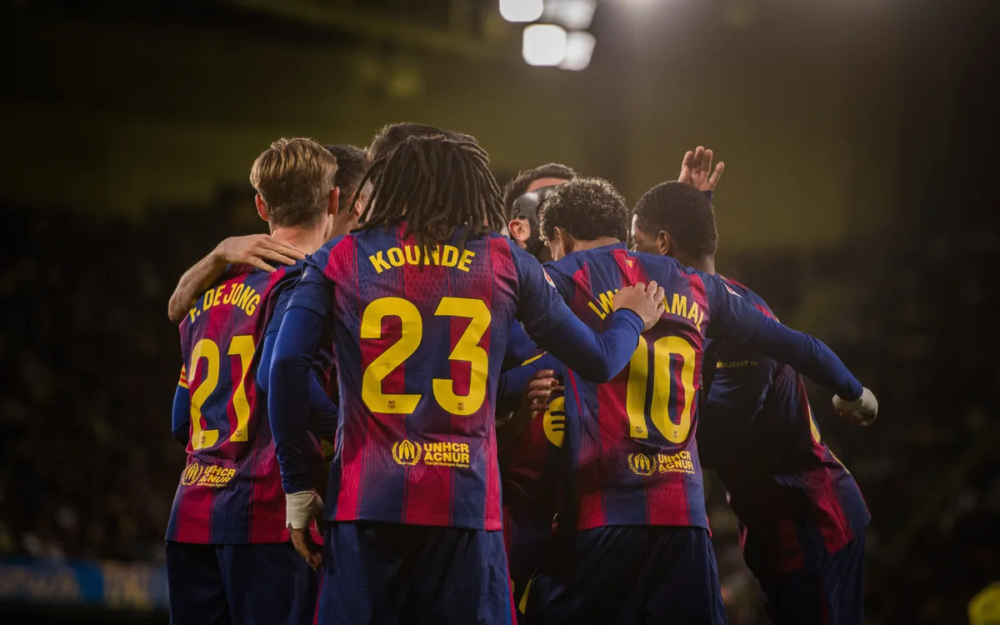
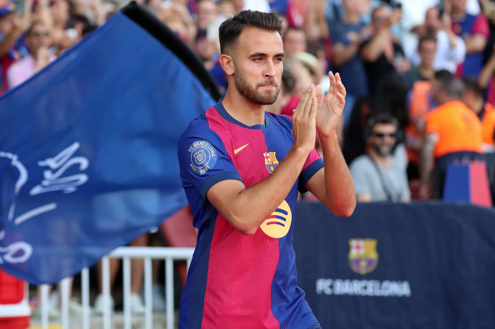

바르셀로나는 최근 라민 야말을 포함해 여러 핵심 선수들과 재계약을 체결하며 전력 안정에 속도를 내고 있다. 구단은 팀의 중심이 되는 젊은 유망주와 주전 자원들을 장기 계약으로 묶어, 향후 이적 시장에서의 불확실성을 줄이고 지속적인 성장을 도모하고 있다.
이번 연쇄 재계약은 바르셀로나가 단기 성적뿐 아니라 중·장기적인 팀 운영을 염두에 두고 있음을 보여준다. 특히 유스 출신 선수들을 중심으로 한 세대교체 전략을 이어가며, 클럽의 정체성과 경쟁력을 동시에 강화하겠다는 의지가 반영된 결정으로 평가된다.
야말의 재계약에 대해서

라민 야말은 최근 바르셀로나와 재계약을 체결하며 장기적으로 구단에 남게 됐다. 어린 나이에도 불구하고 1군에서 인상적인 활약을 펼친 야말은 이번 계약을 통해 구단의 핵심 자원으로 공식 인정받았으며, 바르셀로나는 그의 잠재력과 성장 가능성에 강한 신뢰를 보였다.
이번 재계약은 바르셀로나가 야말을 중심으로 한 미래 구상을 본격화하고 있음을 의미한다. 구단은 유스 출신 스타를 지켜내며 세대교체와 전력 안정을 동시에 노리고 있고, 야말 역시 바르셀로나에서 커리어를 이어가겠다는 의지를 분명히 하며 팬들의 기대를 모으고 있다.
에릭의 재계약에 대해서

에릭 가르시아는 최근 바르셀로나와 재계약을 체결하며 팀에 잔류하게 됐다. 유스 출신인 그는 수비진에서 안정적인 경기 운영과 빌드업 능력을 바탕으로 꾸준히 기회를 받아왔고, 구단은 그의 전술적 활용도와 성장 가능성을 높게 평가해 재계약을 결정했다.
이번 재계약은 바르셀로나가 수비진의 연속성과 전력 안정을 중시하고 있음을 보여준다. 에릭 가르시아 역시 팀에 대한 애정과 신뢰를 바탕으로 바르셀로나에서 경쟁을 이어가겠다는 의지를 드러냈으며, 향후 주전 경쟁 속에서 더욱 중요한 역할을 맡을 것으로 기대되고 있다.